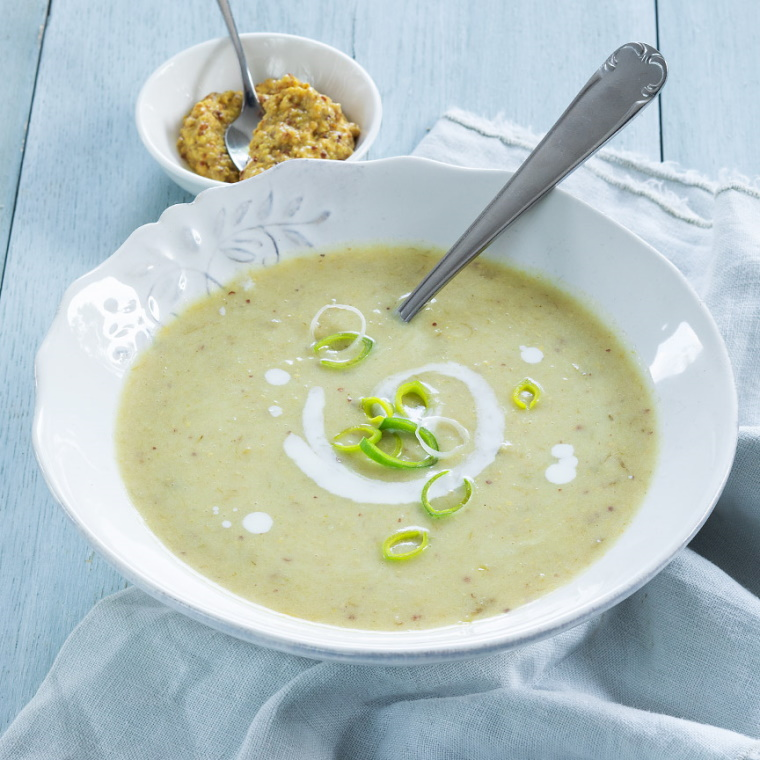

Mosterdsoep
Deze mosterdsoep is een perfect voorgerecht, en kan na het eten lang bewaard worden.
Ingrediënten
- 1 prei
- 250 gram aardappel
- 25 gram boter
- 2 eetlepels grove mosterd (of meer)
- 1 blokje kippenbouillon
- 100 milliliter slag/kookroom
- 1 liter water
- Eventuele smaakmakers naar eigen smaak.
Bereidingswijze
- Hak de prei in ringetjes. Snijd de aardappeltjes in stukjes van 3cm.
- Verhit de boter in de pan en voeg de prei en aardappeltjes toe. Roer de mosterd erdoor.
- Voeg water toe en breng aan de kook. Laat het bouillonblokje in de soep oplossen en kook voor 15 minuten.
- Pureer alles fijn met een staafmixer. Voeg de room toe en roer goed.
- Proef de soep en voeg smaakmakers toe naar wens.

Tip Gaat goed samen met peper.